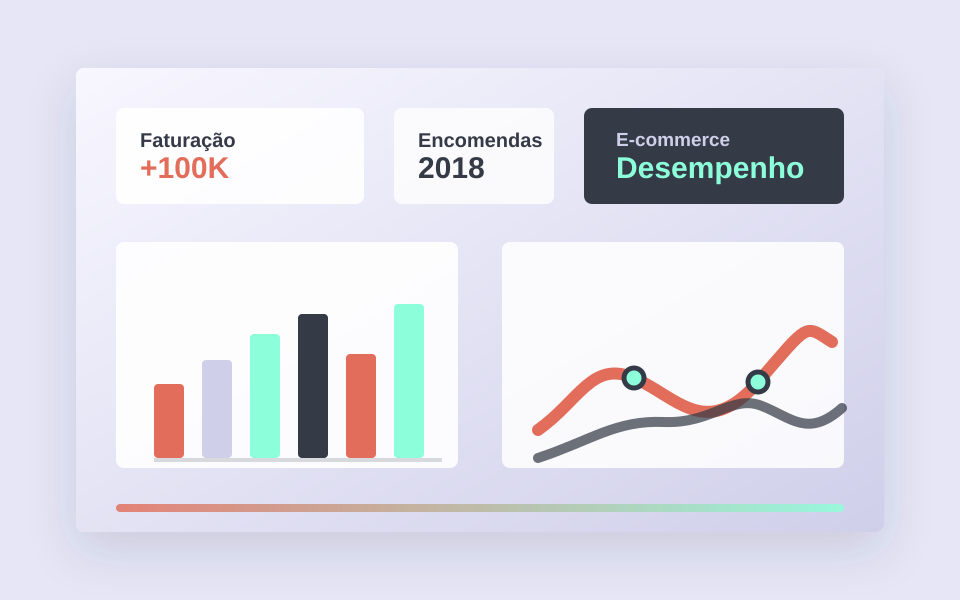

01
Projeto BI - E-Commerce Brasileiro
Dashboard executivo em Power BI desenvolvido com dados de e-commerce brasileiro, cobrindo tendências de faturação, desempenho de produtos, geografia de clientes, logística, satisfação e desempenho de vendedores.
